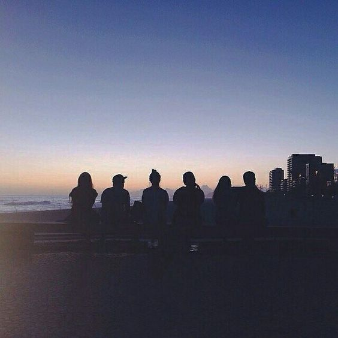

Permítanme contarles cómo ha ido mi vida ahora que tengo 20 años.
Recientemente me gradué del colegio, aunque no obtuve la calificación que esperaba,
logré alcanzar un resultado relativamente bueno, lo cual fue un logro importante.
Ingresé a estudiar una carrera que inicialmente consideré como la mejor opción,
algo que realmente me gustaba. Sin embargo, últimamente me siento abrumada por todo esto.
Tal vez sea porque ya no me siento bien estudiando esta carrera, aunque también podría ser solo una idea mía.
A pesar de todo, quiero continuar y terminarla, ya que sería otro logro en mi vida.
Hasta ahora, no he tenido muchos logros o suficientes para sentirme orgullosa de la persona que soy.
Cuando ingresé al instituto, tuve que aprender a enfrentar mis miedos. Me daba miedo conocer gente nueva
y explorar lugares desconocidos por mí misma. Al principio, fue muy difícil, ya que estas cosas aún me cuestan,
pero poco a poco estoy superando ese miedo. Además, he hecho más amigos de los que tenía en la escuela o el colegio,
y ahora tengo muchas experiencias nuevas con ellos.
El simple hecho de haber ingresado a la educación superior ya es un gran logro para mí. Nunca imaginé cuando era
pequeña estudiar esta carrera porque tenía claro que quería estudiar derecho, pero quién diría que terminaría
estudiando una carrera que ni siquiera está relacionada con eso. Pero, como dicen, nadie tiene el don de saber
qué sucederá en el futuro. Por eso, creo que es importante disfrutar la vida y no planificarla demasiado.
Así es como las cosas suelen ir mejor.
En resumen, hasta ahora he vivido experiencias significativas a mis 20 años,
pero sé que todavía tengo mucho camino por recorrer. Estoy enfrentando nuevos desafíos,
explorando quien en verdad soy y construyendo mi futuro. Aunque no todo está claro en este momento,
estoy decidida a continuar mi camino y descubrir lo que me depara . Estoy emocionada
por las oportunidades que vendrán y espero con ansias los próximos capítulos de mi vida.
